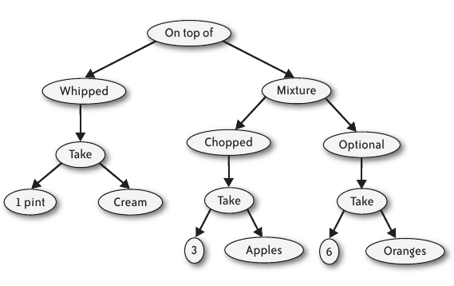

Software Architecture: Meyer OOP v Functional Prog
- A toy example: From (precise) descriptions of puddings, compute
- sugar content
- estimate time to make
- retrieve instructions to make it
- One Approach
- List all puddings (Trifle, lemon upside-down pudding, Dutch apple
cake, Christpudding)
- For each pudding, write down sugar content, time to make,
instructions, etc.
- Another Approach
- Define a small set of 'pudding combinators.'
- Define all puddings in terms of these combinators.
- Calculate sugar content from these combinators too.
- An Example of a Pudding: 
- Descriptions Of Puddings
- salad = on-top-of topping main-part
- topping = whipped (take pint cream)
- main-part = mixture apple-part orange-part
- apple-part = chopped (take 3 apples)
- orange-part = optional (take 6 oranges)
0.1 Compute S (i.e., Sugar Content): Functional Prog Solution
- S (on-top-of p1 p2) = S (p1) + S (p2)
- S (whipped p) = S (p)
- S (take q i) = = q * S(i)
- …
0.2 Advantages
- When we define a new pudding/recipe, we can calculate its sugar content
with no further work.
- Only if we add new combinators or new ingredients would we need to
enhance S.
0.3 Statemnt of A Financial Contract Problem
- Against the promise to pay USD 2.00 on December 27 (the price of
the option), the holder has the right, on December 4, to choose
between:
- Receiving USD 1.95 on December 29, or
- Having the right, on December 11, to choose between:
- Receiving EUR 2.20 on December 28, or
- Having the right, on December 18, to choose between:
- Receiving GBP 1.20 on December 30, or
- Paying immediately one more EUR and receiving EUR 3.20
on December 29”
0.4 Functional Programming Version
- Europian Option: european t u = get (truncate t (or u zero))
- H below denotes the expiry date, or horizon
- H (zero) = infinity , where infinity is a special value with the
expected properties
- H (or c1 c2) = max (H (c1), H (c2))
- H (anytime c) = H (c)
- H (truncate t c) = min (t, H (c))
- H (get c) = H (c)
1 References
- Diomidis Spinellis, Georgios Gousios, "Beautiful Architecture",
O'Reilly Media, Inc., 432 pp, 2009. Highly readable. Find it on
WSU Library Safari.
- The whole book is a Reference.
- Chapter 13 by Bertrand Meyer on Software Architecture:
Object-Oriented Versus Functional is Required Reading.